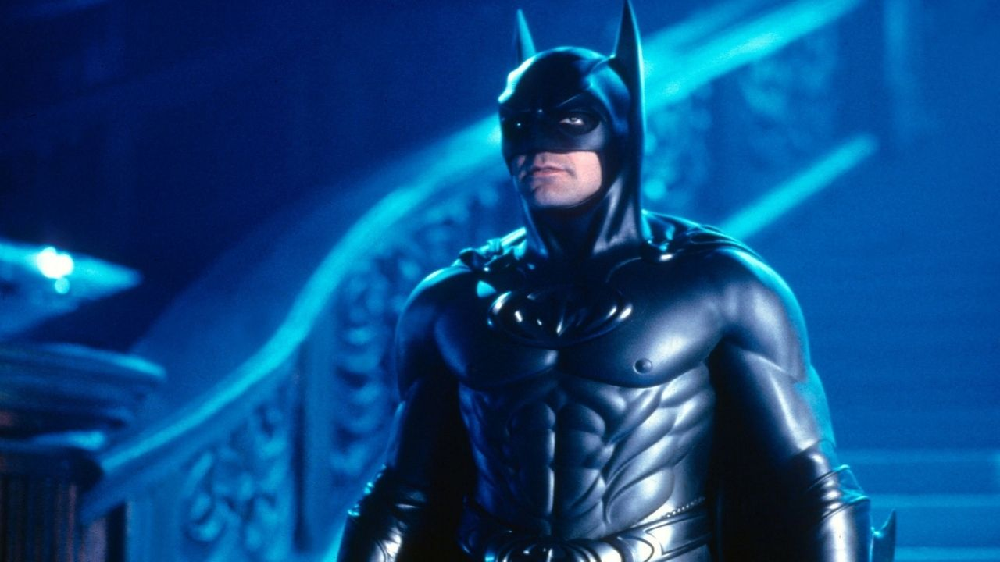

Dossiê Tático: O Cavaleiro Neon (1997)
Atuação de Referência: George Clooney

Perfil Psicológico Operacional
A encarnação mais sociável e carismática do vigilante. Operando numa cidade tomada por estátuas gigantes e luzes neon, este Batman atua quase como uma celebridade sorridente. A dinâmica solitária foi abandonada em favor de uma unidade familiar de combate, operando ativamente com Robin e Batgirl.
Atualização de Design da Armadura: Camuflagem tática noturna Mamilos anatômicos e resistência a gelo.
Recurso de Emergência: BCC (Nunca saia da caverna sem ele).
> Ameaças Nível Congelamento Extremo (Batman 1997 - George Clooney)
- Mr. Freeze (Victor Fries): Cientista trágico focado em trocadilhos de gelo, diamantes e congelamento global.
- Hera Venenosa (Pamela Isley): Eco-terrorista focada em dominação botânica usando pó de feromônios mortais.
- Bane: Capanga super-musculoso movido a veneno neon, usado apenas como guarda-costas da Hera.
"É por isso que o Superman trabalha sozinho."
Bruce Wayne (Reclamando do Robin), 1997